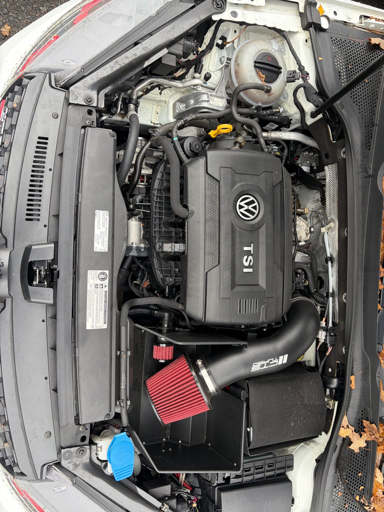
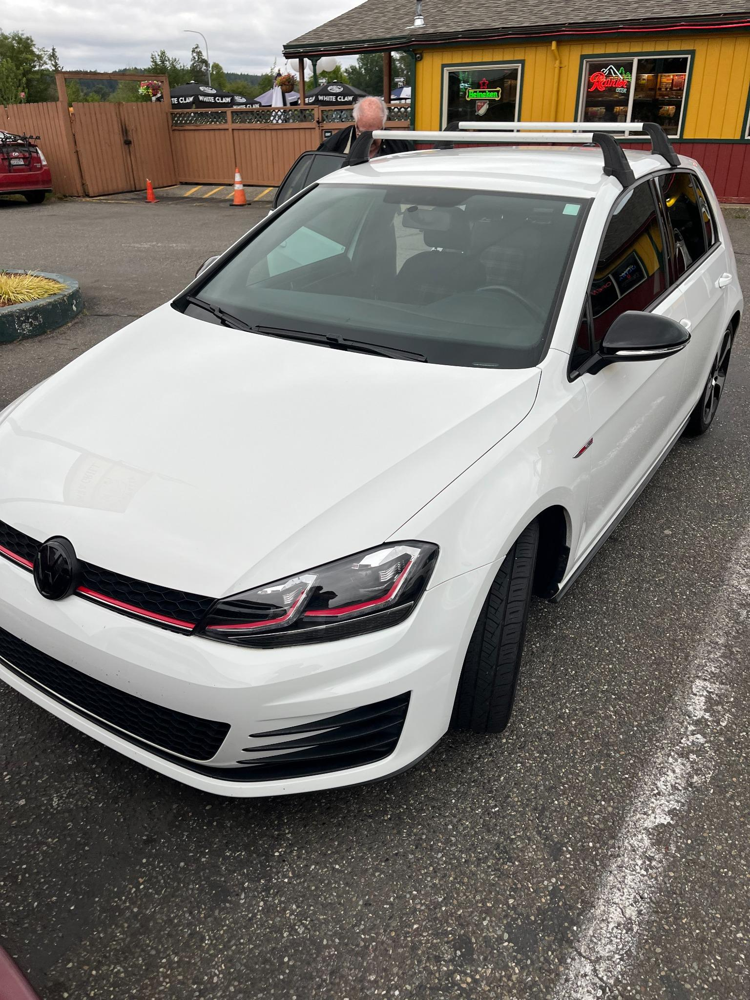
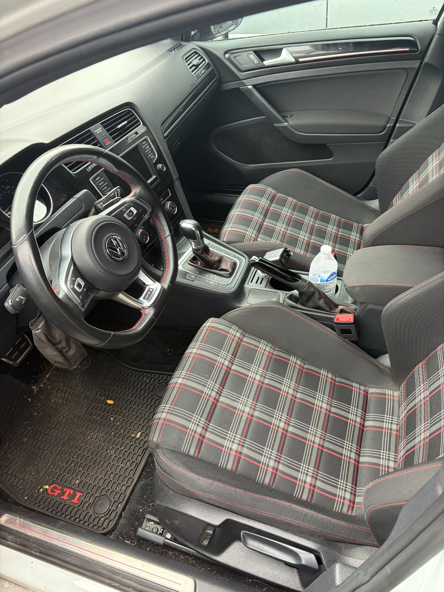
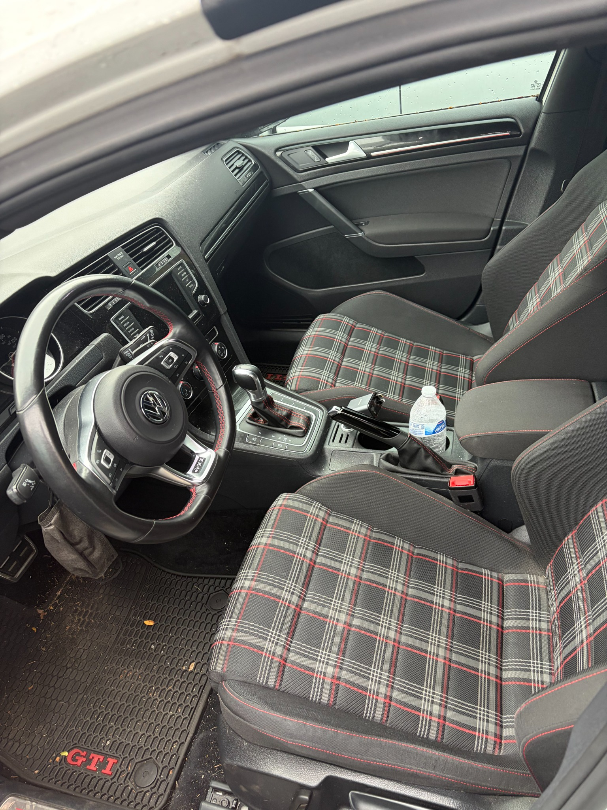
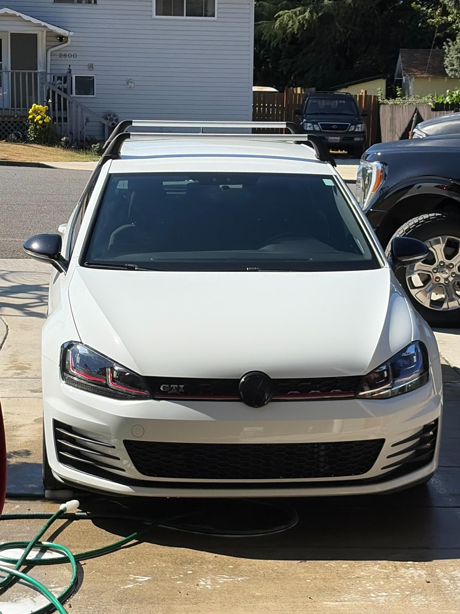
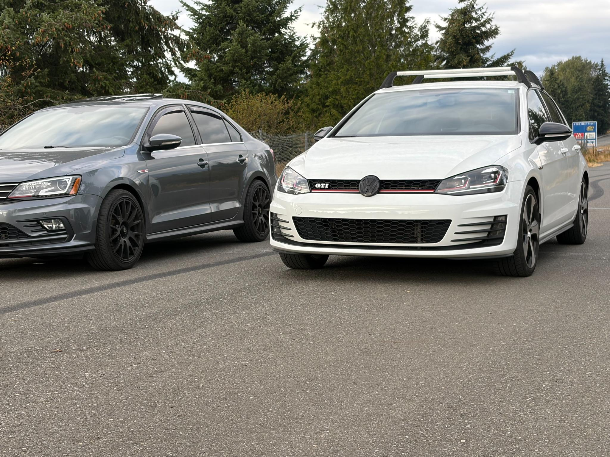
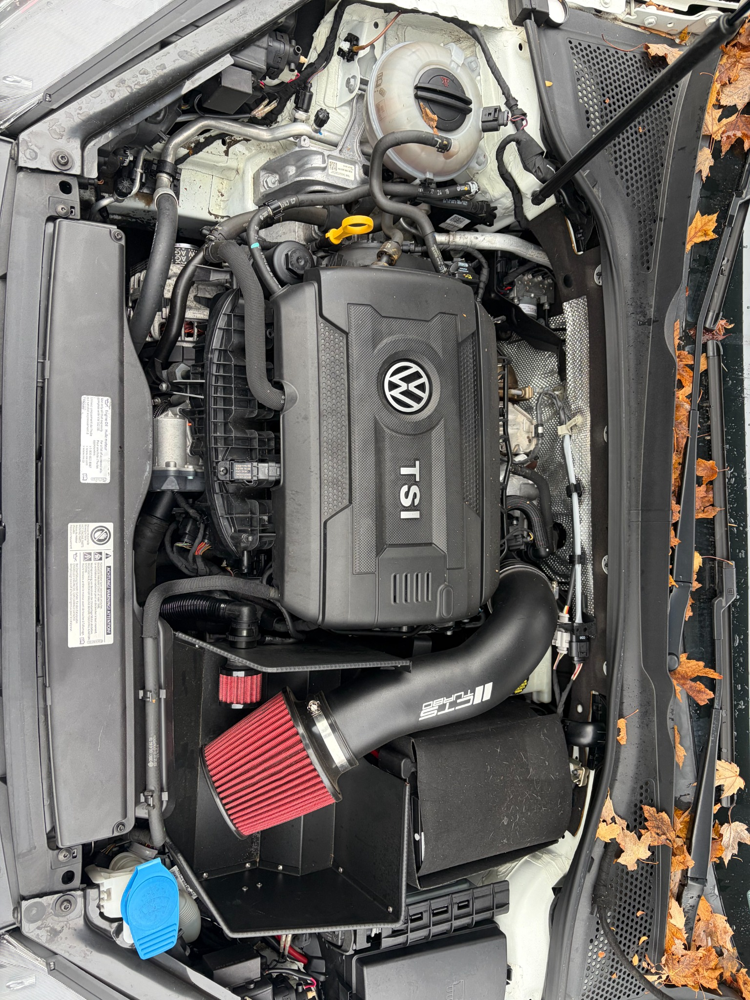

01 / Performance
Cold-air intake
The aftermarket intake has a black tube and a red filter that stands out in the engine bay. It is one of the first things you notice when the hood is open.

A personal look at my car
Everyday practicality. Hot-hatch personality. A car that makes every drive more fun.
Explore the GTIMore than transportation
This is my 2016 Volkswagen Golf GTI Autobahn Edition. I like it because it combines a sporty feel with the practicality of a car I can drive every day. It feels almost like driving a race car: the seats hold you in place, the steering feels responsive, and the car is fun to take through turns.
The white paint, red accents, and roof rack give it a look that stands out. It is also a car I enjoy making my own with a few performance and style details.
A closer look
The small details that make this GTI mine.

01 / Performance
The aftermarket intake has a black tube and a red filter that stands out in the engine bay. It is one of the first things you notice when the hood is open.

02 / Interior
The black, gray, and red plaid cloth seats are one of my favorite GTI details. Their supportive shape gives the cabin a sporty, bucket-seat feel.

03 / Driving
The DSG transmission is part of what makes the car enjoyable to drive. Red stitching and GTI details carry the sporty look through the cockpit.
04 / Exterior
The white exterior, red grille details, and roof rack give the car its own look. The aftermarket exhaust is another personal performance modification.
Power meets practicality
The numbers behind the fun.
Horsepower
0–60 mph
Typical city mileage
Best highway mileage reported
Performance and fuel-economy figures are the figures I have provided for my car; actual results can vary with driving conditions.
Made a little more personal
My GTI has a cold-air intake and an aftermarket exhaust. The intake is visible in the engine-bay photos, including its red filter and black intake tubing. These modifications add to the character of the car and make the engine bay stand out.
The details inside
Sporty details with everyday comfort.
One of my favorite parts of the car is the black, gray, and red plaid cloth seating. The bucket-seat shape gives it a sporty feel, while red stitching and GTI details carry the theme through the cabin.
The DSG transmission makes driving enjoyable, and the red interior lighting adds another personal touch.
My own photos
A closer look at the exterior, cabin, and engine bay.



The best part
That is what makes this GTI special to me: it is practical enough for everyday life, but still gives me a reason to look forward to getting behind the wheel.
Back to top ↑